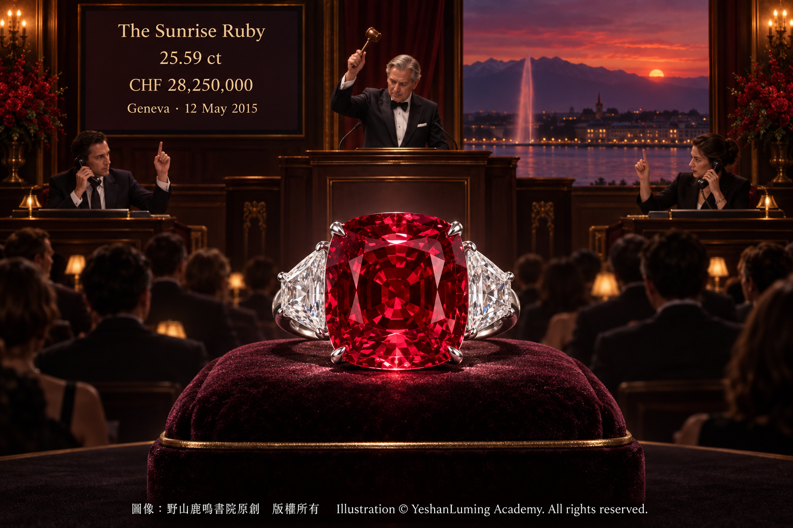

日出紅寶石 · 第一顆每克拉突破百萬美元的紅色神話The Sunrise Ruby · The First Ruby to Break the Million-Dollar-Per-Carat Barrier
The World of Gemstones · Ruby SeriesThe Sunrise Ruby · The First Ruby to Break the Million-Dollar-Per-Carat Barrier
The World of Gemstones · Ruby Series日出紅寶石 · 第一顆每克拉突破百萬美元的紅色神話
寶石世界·紅寶石篇
寶石世界·紅寶石篇（108）The World of Gemstones · Ruby Series (108)
在當今的高級珠寶與彩色寶石收藏界，拍賣紀錄就像一座座高聳入雲的山峰。每一個驚人的數字，都在等待大自然更為罕見的奇蹟前來挑戰。
二〇二三年六月八日，一顆重達55.22克拉、名為「FURA之星」（Estrela de FURA 55.22）的莫三比克紅寶石，在紐約蘇富比以3,480萬美元成交，創下紅寶石及彩色寶石拍賣總價的新紀錄。
然而，在它登上世界之巔以前，這項紀錄曾經由另一顆緬甸紅寶石保持了八年。
它不僅以令人難以置信的價格震撼了整個珠寶世界，更成為拍賣史上第一顆平均每克拉價格突破100萬美元的紅寶石。它就是誕生於緬甸的傳奇——日出紅寶石（The Sunrise Ruby）。
二〇一五年五月十二日，瑞士日內瓦蘇富比拍賣廳內的空氣彷彿凝結了。來自世界各地的珠寶商、收藏家與拍賣專家，都把目光集中在展示台上那一抹耀眼而濃烈的紅色。
那是一枚由卡地亞（Cartier）製作的鉑金戒指。戒指中央鑲嵌一顆重達25.59克拉的墊形紅寶石，兩側各配一顆盾形鑽石，重量分別為2.47克拉與2.70克拉。
這顆紅寶石經瑞士寶石學院（SSEF）與古柏林寶石實驗室（Gübelin Gem Lab）鑑定，確認為天然紅寶石，產自緬甸，沒有發現加熱處理跡象，顏色達到備受市場推崇的「鴿血紅」。
蘇富比為這枚戒指給出的拍賣估價為1,170萬至1,750萬瑞郎。這在當時已經是一個令人驚嘆的數字，但拍賣開始後，現場的競爭很快超出了所有人的預期。
兩位通過電話參與競投的私人收藏家互不相讓，價格在一次次叫價中不斷攀升。最終，這枚戒指以2,825萬瑞郎成交，按照當時匯率折合約3,030萬美元，遠遠超過拍賣前的最高估價。
以25.59克拉計算，日出紅寶石的平均價格達到每克拉約118.3萬美元。它由此成為拍賣史上第一顆每克拉突破100萬美元的紅寶石，也在當時同時創下紅寶石拍賣總價、紅寶石單克拉價格以及卡地亞珠寶拍賣價格等重要紀錄。
在當今的高級珠寶與彩色寶石收藏界，拍賣紀錄就像一座座高聳入雲的山峰。每一個驚人的數字，都在等待大自然更為罕見的奇蹟前來挑戰。
二〇二三年六月八日，一顆重達55.22克拉、名為「FURA之星」（Estrela de FURA 55.22）的莫三比克紅寶石，在紐約蘇富比以3,480萬美元成交，創下紅寶石及彩色寶石拍賣總價的新紀錄。
然而，在它登上世界之巔以前，這項紀錄曾經由另一顆緬甸紅寶石保持了八年。
它不僅以令人難以置信的價格震撼了整個珠寶世界，更成為拍賣史上第一顆平均每克拉價格突破100萬美元的紅寶石。它就是誕生於緬甸的傳奇——日出紅寶石（The Sunrise Ruby）。
二〇一五年五月十二日，瑞士日內瓦蘇富比拍賣廳內的空氣彷彿凝結了。來自世界各地的珠寶商、收藏家與拍賣專家，都把目光集中在展示台上那一抹耀眼而濃烈的紅色。
那是一枚由卡地亞（Cartier）製作的鉑金戒指。戒指中央鑲嵌一顆重達25.59克拉的墊形紅寶石，兩側各配一顆盾形鑽石，重量分別為2.47克拉與2.70克拉。
這顆紅寶石經瑞士寶石學院（SSEF）與古柏林寶石實驗室（Gübelin Gem Lab）鑑定，確認為天然紅寶石，產自緬甸，沒有發現加熱處理跡象，顏色達到備受市場推崇的「鴿血紅」。
蘇富比為這枚戒指給出的拍賣估價為1,170萬至1,750萬瑞郎。這在當時已經是一個令人驚嘆的數字，但拍賣開始後，現場的競爭很快超出了所有人的預期。
兩位通過電話參與競投的私人收藏家互不相讓，價格在一次次叫價中不斷攀升。最終，這枚戒指以2,825萬瑞士法郎成交，按照當時匯率折合約3,030萬美元，遠遠超過拍賣前的最高估價。

Click to enlarge
以25.59克拉計算，日出紅寶石的平均價格達到每克拉約118.3萬美元。它由此成為拍賣史上第一顆每克拉突破100萬美元的紅寶石，也在當時同時創下紅寶石拍賣總價、紅寶石單克拉價格以及卡地亞珠寶拍賣價格等重要紀錄。
幾個月後，另一顆重15.04克拉的緬甸無燒紅寶石「緋紅火焰」（The Crimson Flame），在香港佳士得以約1,800萬美元成交，平均每克拉約120萬美元，刷新了日出紅寶石剛剛創下的單克拉紀錄。
到了二〇二三年，FURA之星又以3,480萬美元超越日出紅寶石，改寫了紅寶石及彩色寶石的拍賣總價紀錄。
但是，紀錄被後來者打破，並沒有削弱日出紅寶石在彩色寶石歷史上的地位。因為真正偉大的寶石，價值不只在於它是否永遠佔據排行榜第一名，更在於它是否曾經改變整個世界對一類寶石的想像。
日出紅寶石讓世界第一次清楚地看到：一顆頂級紅寶石的每克拉價格，完全可以跨越100萬美元大關，進入過去幾乎只有最珍稀彩色鑽石才能到達的領域。
這顆紅寶石的名稱，也帶有濃厚的詩意。它源自十三世紀波斯蘇菲派神秘主義詩人魯米（Rumi）的一首著名詩作《日出紅寶石》。
在那首詩中，日出的紅光與紅寶石，被賦予愛、渴望、覺醒和靈魂交融的象徵。這顆寶石濃郁、飽滿而充滿生命力的紅色，彷彿把黎明最初升起的光芒凝固在晶體之中，因此得名「日出紅寶石」。
關於這顆寶石在進入公開拍賣市場以前的經歷，民間曾經流傳過許多充滿戲劇性的故事，包括原石重量、發現年代、早期買家和歷次轉手價格等。
然而，這些傳聞缺乏可靠的拍賣檔案與權威實驗室資料支持，其中一些情節還可能與其他著名紅寶石的故事相互混淆。因此，對一顆如此重要的歷史名石，我們寧可承認早期來源尚不清楚，也不應當用無法核實的傳奇填補歷史的空白。
真正有充分資料支持的，是它在二〇一五年公開亮相時所展現出的非凡品質。
瑞士寶石學院在為日出紅寶石出具的附錄信中指出，這顆25.596克拉的紅寶石同時擁有令人印象深刻的尺寸與重量、高度迷人的顏色、優良的淨度，以及比例勻稱的切工。
光線進入寶石後，經過多次內部反射，形成鮮明而充滿生命力的紅色。由於高品質紅寶石通常只能形成較小的晶體，一顆天然緬甸紅寶石能夠同時達到如此巨大的重量、鮮艷的顏色與優良的淨度，在自然界中極為罕見。
SSEF因此把日出紅寶石稱為「大自然獨一無二的珍寶」。
古柏林寶石實驗室也在附錄信中指出，這顆紅寶石呈現均勻而高度飽和的「鴿血紅」色，具有頂級緬甸紅寶石令人嚮往的色彩特徵。它的色彩濃度、高透明度、明亮度與精細切工，共同構成了這顆寶石不同凡響的美感。
更難得的是，SSEF與古柏林都沒有在這顆紅寶石中發現加熱處理的跡象。
在本系列第一篇與第四篇中，我們曾經介紹過，大自然創造紅寶石時面臨極為苛刻的化學與地質條件。使剛玉呈現紅色的鉻元素進入晶格後，可能造成晶格畸變，增加晶體形成缺陷與裂隙的機會。
因此，重量超過5克拉而又同時擁有優秀顏色、透明度和淨度的天然紅寶石，已經十分罕見。當重量增加到25.59克拉，還要兼具鴿血紅色、優良淨度、比例勻稱的切工，以及沒有發現加熱處理跡象等條件，其稀有程度自然呈幾何級數上升。
日出紅寶石並非內部完全沒有任何內含物。蘇富比的拍品資料明確指出，寶石中可見天然紅寶石的典型內含物。但是，在如此巨大的重量之下，這些內含物並沒有嚴重破壞寶石的透明度與整體美感，反而成為確認其天然身份與地質形成過程的重要證據。
它真正動人的地方，是巨大的重量、均勻飽和的紅色、優良淨度和精細切工之間，形成了一種極難重現的平衡。
當光線穿過寶石，在內部不斷反射，再從冠部釋放出來時，它不像一塊安靜的紅色礦物，而更像一團被封存在晶體深處、卻仍然持續燃燒的火焰。這種充滿生命力的視覺效果，正是頂級紅寶石最令人著迷之處。
作為剛玉族的一員，紅寶石的一般礦物學性質包括：莫氏硬度為9，相對密度約為4.00，折射率通常約在1.762至1.770之間，雙折射率約為0.008。這些數據反映的是紅寶石所屬礦物種類的基本性質，並不是日出紅寶石拍賣證書逐項公開列出的個體檢測數據。
真正決定日出紅寶石身價的，也不是某一項孤立的物理數值，而是尺寸、重量、顏色、透明度、淨度、切工、天然身份、無燒狀態、緬甸產地、卡地亞鑲嵌和拍賣歷史共同形成的整體價值。
日出紅寶石在二〇一五年成交後，買家的身份最初沒有公開。後來人們才知道，它進入了奧地利億萬富豪海蒂·霍爾滕（Heidi Horten）的私人珠寶收藏。
海蒂·霍爾滕去世後，這枚戒指於二〇二三年五月再次出現在日內瓦拍賣場。佳士得在拍賣前重新取得了SSEF和古柏林出具的鑑定報告，再次確認這顆25.59克拉紅寶石產自緬甸，沒有發現加熱處理跡象，顏色為鴿血紅。
然而，這一次它以約1,470萬美元成交，明顯低於二〇一五年約3,030萬美元的歷史高價。
這個結果並沒有改變日出紅寶石本身的寶石學品質，卻揭示了高端珠寶市場一個極為重要的事實：拍賣價格不僅由寶石本身決定，也受到收藏來源、競投者數量、經濟環境、市場情緒、拍賣時機以及其他外部因素的共同影響。
即使是世界級名石，也不能被簡單理解為只漲不跌的金融商品。一場拍賣中的驚人價格，可能來自兩位收藏家在特定時刻的激烈競爭；當它再次進入市場時，新的買家結構和市場情緒，也可能給出完全不同的答案。
因此，日出紅寶石的故事不僅是一個財富神話，也是一堂關於收藏與價格的深刻課程。
它告訴我們，天然稀有性是名石價值的根基，實驗室報告是判斷身份與處理狀態的重要證據，頂級品牌鑲嵌和歷史來源可以增加文化價值，而拍賣紀錄則是市場在某一時刻作出的公開選擇。
這些因素相互交織，最終形成名石的價格；但任何一次拍賣成交，都不能被誤解為永遠不變的價值保證。
日出紅寶石的神話，是緬甸複雜地質演化留下的珍貴結晶，也是人類審美、詩歌、珠寶藝術和財富競逐共同書寫的一段歷史。
它雖然已經不再保持紅寶石拍賣總價和單克拉價格的最高紀錄，卻永遠是第一顆在公開拍賣中每克拉突破100萬美元的紅寶石。正是它，第一次把紅寶石的市場價值推上了一座前人從未到達的高峰。
為了方便讀者將來研究頂級彩色寶石、查閱拍賣歷史或進行高端收藏交流，下面把日出紅寶石的核心寶石學資料與拍賣紀錄綜合整理如下。
一、寶石基本資料
- 名稱：日出紅寶石（The Sunrise Ruby）。
- 重量：25.59克拉；SSEF二〇一五年報告記錄重量為25.596克拉。
- 寶石種類：天然紅寶石。
- 產地：緬甸。
- 加熱情況：SSEF與古柏林均表示沒有發現加熱處理跡象。
- 顏色：鴿血紅（Pigeon Blood）。
- 切工：墊形明亮式切工（Cushion-shaped brilliant-cut）。
- 內部特徵：具有天然紅寶石的典型內含物，同時保持優良淨度、透明度與明亮度。
二、戒指鑲嵌資料
- 製作者：卡地亞（Cartier）。
- 材質：鉑金。
- 中央主石：25.59克拉日出紅寶石。
- 兩側配石：盾形鑽石，分別重2.47克拉與2.70克拉。
- 鑽石品質：兩顆鑽石均為E色，淨度分別為VS1與VS2。
三、二〇一五年蘇富比拍賣紀錄
- 拍賣日期：二〇一五年五月十二日。
- 拍賣地點：瑞士日內瓦蘇富比。
- 拍品編號：Lot 502。
- 拍賣估價：1,170萬至1,750萬瑞郎。
- 成交價：2,825萬瑞郎，按當時匯率折合約3,030萬美元。
- 平均每克拉價格：約118.3萬美元。
- 歷史地位：拍賣史上第一顆平均每克拉價格突破100萬美元的紅寶石；當時同時創下紅寶石總價及單克拉價格等拍賣紀錄。
四、後續紀錄變化
- 二〇一五年十二月：15.04克拉的緬甸紅寶石「緋紅火焰」在香港佳士得以約1,800萬美元成交，平均每克拉約120萬美元，刷新紅寶石單克拉拍賣紀錄。
- 二〇二三年五月：日出紅寶石作為海蒂·霍爾滕舊藏，在日內瓦佳士得再次拍賣，以約1,470萬美元成交。
- 二〇二三年六月：55.22克拉的莫三比克紅寶石「FURA之星」在紐約蘇富比以3,480萬美元成交，刷新紅寶石及彩色寶石拍賣總價紀錄。
最後必須記住：世界紀錄會被打破，市場價格會上下波動，但是一顆名石在歷史上第一次推開某扇大門的地位，不會因此消失。
日出紅寶石不再是世界上拍賣總價最高的紅寶石，也不再保持最高單克拉價格紀錄，但它仍然是那顆把紅寶石帶入「每克拉百萬美元時代」的先驅。它像真正的日出一樣，照亮了後來者通往更高紀錄的道路。
（未完待續）
In today’s world of high jewelry and colored gemstone collecting, auction records rise like towering mountain peaks. Every astonishing number awaits an even rarer miracle of nature to challenge it.
On June 8, 2023, a 55.22-carat Mozambique ruby named the Estrela de FURA 55.22 sold for US$34.8 million at Sotheby’s New York, setting a new auction record for both a ruby and a colored gemstone.
Before it ascended to the summit, however, that record had been held for eight years by another ruby from Burma.
It not only stunned the entire jewelry world with an almost unimaginable price, but also became the first ruby in auction history to surpass an average price of US$1 million per carat. It was the Burmese-born legend known as the Sunrise Ruby.
On May 12, 2015, the air inside Sotheby’s auction room in Geneva, Switzerland, seemed to freeze. Jewelers, collectors, and auction specialists from around the world fixed their eyes on the dazzling, intensely red gemstone displayed before them.
It was a platinum ring made by Cartier. At its center was a 25.59-carat cushion-shaped ruby, flanked by two shield-shaped diamonds weighing 2.47 and 2.70 carats.
The Swiss Gemmological Institute (SSEF) and Gübelin Gem Lab identified the stone as a natural ruby of Burmese origin, with no indications of heating and a color described by the laboratories as the highly coveted “pigeon blood.”
Sotheby’s estimated the ring at CHF11.7 million to CHF17.5 million. That was already an astonishing figure, but once the auction began, the competition quickly exceeded every expectation.
Two private collectors bidding by telephone refused to yield, and the price climbed with each successive bid. The ring ultimately sold for CHF28.25 million—approximately US$30.3 million at the exchange rate of the time—far beyond its highest presale estimate.
Based on its weight of 25.59 carats, the Sunrise Ruby achieved an average price of approximately US$1.183 million per carat. It thereby became the first ruby in auction history to cross the US$1-million-per-carat threshold, while also setting several important records at the time, including the highest total auction price for a ruby, the highest price per carat for a ruby, and the highest auction price for a Cartier jewel.
In today’s world of high jewelry and colored gemstone collecting, auction records rise like towering mountain peaks. Every astonishing number awaits an even rarer miracle of nature to challenge it.
On June 8, 2023, a 55.22-carat Mozambique ruby named the Estrela de FURA 55.22 sold for US$34.8 million at Sotheby’s New York, setting a new auction record for both a ruby and a colored gemstone.
Before it ascended to the summit, however, that record had been held for eight years by another ruby from Burma.
It not only stunned the entire jewelry world with an almost unimaginable price, but also became the first ruby in auction history to surpass an average price of US$1 million per carat. It was the Burmese-born legend known as the Sunrise Ruby.
On May 12, 2015, the air inside Sotheby’s auction room in Geneva, Switzerland, seemed to freeze. Jewelers, collectors, and auction specialists from around the world fixed their eyes on the dazzling, intensely red gemstone displayed before them.
It was a platinum ring made by Cartier. At its center was a 25.59-carat cushion-shaped ruby, flanked by two shield-shaped diamonds weighing 2.47 and 2.70 carats.
The Swiss Gemmological Institute (SSEF) and Gübelin Gem Lab identified the stone as a natural ruby of Burmese origin, with no indications of heating and a color described by the laboratories as the highly coveted “pigeon blood.”
Sotheby’s estimated the ring at CHF11.7 million to CHF17.5 million. That was already an astonishing figure, but once the auction began, the competition quickly exceeded every expectation.
Two private collectors bidding by telephone refused to yield, and the price climbed with each successive bid. The ring ultimately sold for CHF28.25 million—approximately US$30.3 million at the exchange rate of the time—far beyond its highest presale estimate.
Click to enlarge
Based on its weight of 25.59 carats, the Sunrise Ruby achieved an average price of approximately US$1.183 million per carat. It thereby became the first ruby in auction history to cross the US$1-million-per-carat threshold, while also setting several important records at the time, including the highest total auction price for a ruby, the highest price per carat for a ruby, and the highest auction price for a Cartier jewel.
Several months later, another unheated Burmese ruby—the 15.04-carat Crimson Flame—sold at Christie’s Hong Kong for approximately US$18 million, or around US$1.2 million per carat, surpassing the per-carat record that the Sunrise Ruby had only recently established.
Then, in 2023, the Estrela de FURA surpassed the Sunrise Ruby with its US$34.8 million sale, rewriting the auction record for the highest total price achieved by a ruby or colored gemstone.
Yet the fact that later gemstones broke its records has not diminished the Sunrise Ruby’s place in colored gemstone history. A truly great gemstone is valued not merely because it occupies the top position forever, but because it once transformed the world’s understanding of what an entire category of gemstone could achieve.
The Sunrise Ruby showed the world for the first time that the price of a supreme-quality ruby could cross the US$1-million-per-carat barrier and enter a realm that had previously been reached almost exclusively by the rarest colored diamonds.
The gemstone’s name is equally rich in poetry. It was inspired by *The Sunrise Ruby*, a celebrated poem by the thirteenth-century Persian Sufi mystic Rumi.
In that poem, the red light of sunrise and the ruby itself become symbols of love, longing, awakening, and the union of souls. The gemstone’s rich, saturated, and vibrantly alive red color seems to preserve within its crystal the first light of dawn, and so it became known as the Sunrise Ruby.
Many dramatic stories have circulated about the gemstone’s history before it entered the public auction market, including claims concerning the weight of its rough crystal, the date of its discovery, its early buyers, and the prices paid in successive private transactions.
However, these stories lack the support of reliable auction records or authoritative laboratory documentation, and some details may have been confused with the histories of other famous rubies. For a historic gemstone of such importance, it is better to acknowledge that its early provenance remains uncertain than to fill the gaps in its history with legends that cannot be verified.
What is supported by substantial documentation is the extraordinary quality it displayed when it appeared publicly in 2015.
In its appendix letter for the Sunrise Ruby, the Swiss Gemmological Institute stated that the 25.596-carat ruby possessed an impressive size and weight, a highly attractive color, fine purity, and a well-proportioned cut.
As light entered the gemstone and underwent multiple internal reflections, it produced a vivid red color filled with vitality. Since high-quality rubies generally form only as relatively small crystals, it is exceptionally rare in nature for a natural Burmese ruby to combine such an immense weight with vivid color and fine purity.
SSEF therefore described the Sunrise Ruby as “a unique treasure of nature.”
Gübelin Gem Lab also stated in its appendix letter that the ruby displayed a homogeneous and richly saturated “pigeon blood red” color, possessing the highly desirable color characteristics associated with the finest Burmese rubies. Its depth of color, high transparency, brilliance, and finely proportioned cut together created its extraordinary beauty.
Rarer still, neither SSEF nor Gübelin found indications that the ruby had been subjected to heat treatment.
In the first and fourth articles of this series, we explained that nature faces exceptionally demanding chemical and geological conditions when creating a ruby. When chromium—the element responsible for corundum’s red color—enters the crystal lattice, it may cause lattice distortion and increase the likelihood of defects and fissures forming within the crystal.
A natural ruby weighing more than five carats while also possessing excellent color, transparency, and clarity is therefore already exceedingly rare. When the weight reaches 25.59 carats and the gemstone must also combine pigeon blood color, fine purity, a well-proportioned cut, and no indications of heating, its rarity increases exponentially.
The Sunrise Ruby is not entirely free of inclusions. Sotheby’s lot description specifically states that the gemstone contains inclusions typical of natural ruby. Yet at such an extraordinary weight, these inclusions do not seriously diminish its transparency or overall beauty. Instead, they provide important evidence of its natural identity and geological formation.
What makes it truly captivating is the almost impossible balance among its immense weight, homogeneous and saturated red color, fine purity, and refined cutting.
As light passes through the gemstone, reflects repeatedly within it, and then emerges through the crown, it no longer resembles a silent piece of red mineral. Instead, it appears like a flame sealed deep inside the crystal yet continuing to burn. This sense of living fire is precisely what makes the finest rubies so mesmerizing.
As a member of the corundum family, ruby generally has a Mohs hardness of 9, a relative density of approximately 4.00, a refractive index commonly ranging from about 1.762 to 1.770, and a birefringence of approximately 0.008. These figures represent the fundamental properties of the mineral species to which ruby belongs; they are not individual test results publicly listed item by item in the Sunrise Ruby’s auction reports.
Nor is the Sunrise Ruby’s value determined by any single physical measurement. Its worth arises from the totality of its size, weight, color, transparency, clarity, cut, natural identity, unheated condition, Burmese origin, Cartier mounting, and auction history.
When the Sunrise Ruby sold in 2015, the buyer’s identity was not initially disclosed. It later became known that the jewel had entered the private collection of Austrian billionaire Heidi Horten.
After Heidi Horten’s death, the ring returned to the Geneva auction market in May 2023. Before the sale, Christie’s obtained new reports from SSEF and Gübelin, once again confirming that the 25.59-carat ruby was of Burmese origin, showed no indications of heating, and possessed pigeon blood color.
This time, however, it sold for approximately US$14.7 million—significantly below its historic 2015 price of about US$30.3 million.
The result did not alter the gemological quality of the Sunrise Ruby itself, but it revealed an important truth about the high jewelry market: auction prices are determined not only by the gemstone, but also by provenance, the number of bidders, the economic environment, market sentiment, the timing of the sale, and other external factors.
Even a world-famous gemstone cannot simply be regarded as a financial asset that only rises and never falls. An astonishing auction price may result from intense competition between two collectors at one particular moment. When the same jewel returns to the market, a different group of buyers and a different market atmosphere may produce an entirely different answer.
The story of the Sunrise Ruby is therefore not merely a legend of wealth, but also a profound lesson about collecting and price.
It teaches us that natural rarity forms the foundation of a famous gemstone’s value; laboratory reports provide essential evidence for determining identity and treatment status; mounting by a celebrated jewelry house and distinguished provenance can add cultural value; and an auction record represents the public choice made by the market at one particular moment.
These factors intertwine to form the price of a celebrated gemstone, but no single auction result should ever be misunderstood as an unchanging guarantee of value.
The legend of the Sunrise Ruby is a precious crystallization of Burma’s complex geological evolution, as well as a chapter of history jointly written by human aesthetics, poetry, jewelry artistry, and the competition of wealth.
Although it no longer holds the highest total auction price or the highest per-carat auction price for a ruby, it will forever remain the first ruby to surpass US$1 million per carat at public auction. It was the gemstone that first carried the market value of ruby to a summit no predecessor had ever reached.
For readers who may wish to study important colored gemstones, consult auction history, or participate in discussions concerning high-end collecting, the Sunrise Ruby’s essential gemological information and auction records are summarized below.
I. Basic Gemstone Information
- Name: The Sunrise Ruby.
- Weight: 25.59 carats; the 2015 SSEF report recorded a weight of 25.596 carats.
- Gemstone variety: Natural ruby.
- Origin: Burma.
- Heat treatment: Both SSEF and Gübelin stated that there were no indications of heating.
- Color: Pigeon Blood.
- Cut: Cushion-shaped brilliant-cut.
- Internal characteristics: Contains inclusions typical of natural ruby while retaining fine purity, transparency, and brilliance.
II. Ring and Mounting Information
- Maker: Cartier.
- Metal: Platinum.
- Center stone: The 25.59-carat Sunrise Ruby.
- Side stones: Two shield-shaped diamonds weighing 2.47 and 2.70 carats.
- Diamond quality: Both diamonds are E color, with clarity grades of VS1 and VS2 respectively.
III. The 2015 Sotheby’s Auction Record
- Auction date: May 12, 2015.
- Auction location: Sotheby’s Geneva, Switzerland.
- Lot number: Lot 502.
- Presale estimate: CHF11.7 million to CHF17.5 million.
- Price realized: CHF28.25 million, equivalent to approximately US$30.3 million at the exchange rate of the time.
- Average price per carat: Approximately US$1.183 million.
- Historical significance: The first ruby in auction history to achieve an average price exceeding US$1 million per carat; at the time, it also set auction records for both the highest total price and the highest price per carat for a ruby.
IV. Subsequent Changes in the Records
- December 2015: The 15.04-carat Burmese ruby known as the Crimson Flame sold at Christie’s Hong Kong for approximately US$18 million, averaging about US$1.2 million per carat and setting a new per-carat auction record for a ruby.
- May 2023: The Sunrise Ruby, formerly in the collection of Heidi Horten, returned to auction at Christie’s Geneva and sold for approximately US$14.7 million.
- June 2023: The 55.22-carat Mozambique ruby known as the Estrela de FURA sold at Sotheby’s New York for US$34.8 million, setting a new auction record for the highest total price achieved by a ruby or colored gemstone.
One final truth must be remembered: world records will be broken, and market prices will rise and fall, but a famous gemstone’s place in history as the first to open a particular door will never disappear.
The Sunrise Ruby is no longer the ruby with the highest total auction price, nor does it retain the highest per-carat record. Yet it remains the pioneer that ushered ruby into the era of a million dollars per carat. Like a true sunrise, it illuminated the road along which later gemstones would travel toward even greater records.
(To be continued)